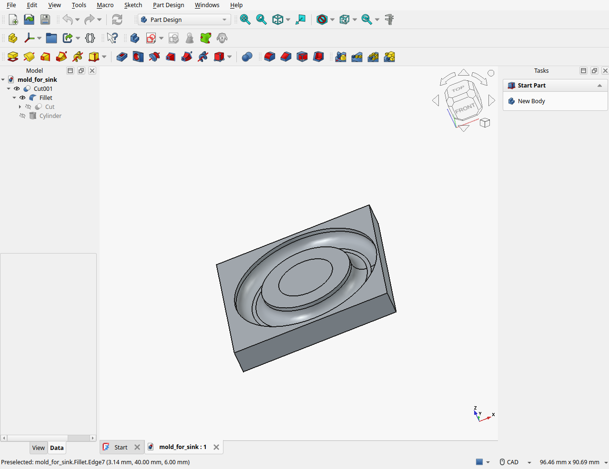
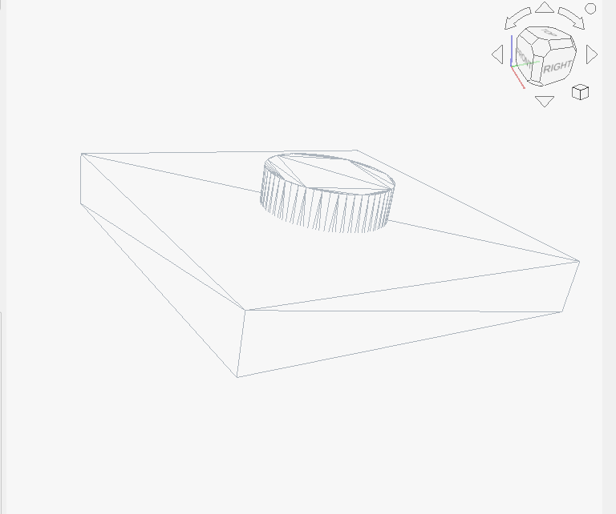
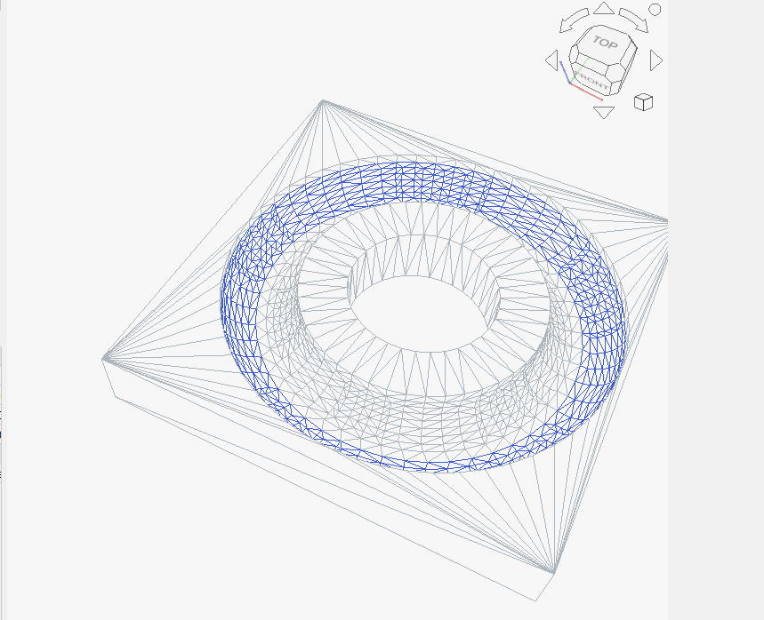

Hello all, in this article I'm going to show you how to make a 3d printed mold for making something in silicone. Silicone is a kind of rubbery material that you can use for materials that need to be sealed tightly. In my case, I needed to seal the drain of a sink, so I needed a small cylinder or torus.
I've been trying to transition to using FreeCAD for my 3d adventures because it is more compact, can run on Linux, and I don't need to worry about transitioning after graduation or paying hundreds or thousands of dollars per annum to use the software. I haven't used it long enough to say deifnitively its limitations, but it has a built-in Python scripting console, so you can probably build things as complex as Fusion 360, but the UI is definitely not as intuitive. On the plus side, this has never crashed for me whereas Fusion can just bomb your GPU if it isn't good enough.
Enough rambling, on with the project!

Step zero is measuring the piece you want to make. I measure that I wanted to make a rubber cylinder about 3.00mm tall with an inner diameter of 23.3mm and an outer diameter of 36.5mm. You want to start with a cube in the part workspace. Make this cube about 2mm deeper than you need so the mold has some support on the bottom. Also make it wider (for me, I made the XY view about 40mmx40mm.) Next, just create your target shape which was a hollow cylinder (aka a tube) in FreeCAD. After this So the above is what I've made.

Once you have these created, you can use cut to make the shape. The only thing you have to do after this is select the inner edges and bevel them a bit to make it so that its easier for the mold to slip out when it is dried, otherwise it will get stuck.
